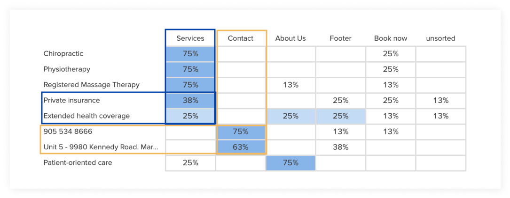

Redesigning the patient experience in the rehabiliation industry
Background
Northville Rehabilitation Centre is a multidisciplinary clinic located in Markham, ON. This is the
second location that the owners have opened, with the first location having been in operation for
over 30 years. Though word of mouth is currently their primary source of referrals, Northville
would like to expand their marketing efforts and audience demographic.
As a new and local rehabilitation clinic, Northville’s goal is to increase their number of walk-ins and referrals. With over 55% of millenials researching their healthcare online (and finding it just as reliable as a doctor), Northville hopes to establish its online presence and align its values with this younger demographic and the community.
What could be done to address the emotional frustration that people felt?
Design Solution
By creating an educational and responsive website, Northville hopes to capture the younger millenial demographic. Revamped copywriting will help succintly inform website visitors on offered clinic services and their benefits. Coupled with an intuitive informational architecture, website visitors can easily navigate around and make an informed decision about their health.
Task #1: Use the site to see whether a physiotherapy or chiropractic treatment would be better for you
This created a problem because there was an increased risk of information being missed. 60% of users would’ve just called or left the site if they couldn’t find what they were looking for.
Calling for information defeated the purpose of having the it on the website, and adds an extra step to the conversion process.
Task #2: Do they accept private insurance or extended
health coverage
When they were overwhelmed, various outcomes were observed:
risk of no trust being developed
leaving the site in frustration
calling to find out information, thus adding an extra step to the conversion process
Task #3: Try to book an appointment
If there was no guidance or instructions on how to book an appointment, users were uncertain whether they had missed an online booking option. This would’ve resulted in calling or emailing (adding an extra step to the conversion) or leaving the site in frustration.
Empathy Map
Understanding the average user
I created an empathy map based on the collective data to help remind me of the user expectations that I was designing for. I found that the redesign had to be focused around the assumption that the average user had no prior knowledge of any medical or rehabilitation terminology.
Competitor task flow comparison
What’re the best practices in existing sites?
I assessed four random existing clinic websites based on the top three factors that people considered when choosing a clinic:
Learning about the offered services
Whether they accepted their insurance company
Ease of booking an appointment
In the end, I hoped to find the best practices and effective organization tactics that competitors used to promtoe their clinic.
Competitor takeaways
All the sites had their offered services under “services” in the
global navigation
There is no consistent placement for insurance information
If clinics didn't offer online booking, the booking information was under a section related to "contact".
Learning about the offered services
>All the sites had their offered services under “services” in the
global navigation.Each service had it’s own desinated page, and a description
explaining the following:
what the treatment or discipline is about
what the therapist will do
what kind of benefits to expect
Finding the insurance information
Interestingly, each site had their own placement of the
insurance information. It was not under its own heading in the global navigation, but
found under different sections such as “FAQ”, “site map”,
“services”, or “pricing”.
This suggests that the clinics think this is secondary information
and don’t place that much priority on it.
Booking an appointment
If clinics didn't offer online booking, the booking information was a section related to "contact". If the clinic offered online booking, there would be a CTA linking to it.
If the clinic did not offer online booking, the information was usually
under “contact”, organized by location.
Under “contact” was the clinic details, including the address, email,
phone/fax, and hours of operation. Interestingly, not all sites used the
word “contact” in the global navigation. Alternatives would be
“locations” or “about me”.
If there was more than one location, the contact information would be
organized by location on one page.
Since I wasn't able to obtain familiar design patterns from competitors, I decided to ask the users msyself through a cardsorting activity. In keeping with the business' goals, it was important to create an architecture that was intuitive to the user’s flow. I wanted to find out:
Where would people look for clinic details?
Where would people look for insurance information?
Details
Platform: remote card sorting activity via OptimalSort
Participants: eight
Number of cards: eight

OptimalSort’s Popular Placements Matrix
The percentage indicates the number of participants who sorted the card (left) into the corresponding category (top).
Card sorting takeaways
“Contact” would be the most likely place people would look to find clinic details
“Private insurance” or "Extended Health Coverage" are interchangeable terms, and “services” is the most likely place people would look.
Low fidelity wireframes
Thanks to the above learnings, I had a better idea of the type of content needed on the website. It was finally time to design! Since I wasn’t creating any new pages, I referenced the site’s existing site map and drew out potential layouts for diffrent pages. During the weekly check-in, the client and I chose what would be the best.
Usability testing round 2
If you fail, try try try again
In addition to making layout changes, I also iterated on the “book an appointment” flow. In this round of testing, I kept the questions the same to also assess the UI and chosen colour scheme. My goals for this round of testing were to:
Assess the high-fidelity layout
Evaluate the effectiveness and/or potential barriers to newly designed task flows
Based on the data, I created an affinity map to identify the most common, and therefore highest priority, problems.
Type: Remote task-based usability testing
Participants: two females, one male
-->
07. Learnings
Redesigning the website for my old clinic brought me back all kinds of nostalgia from my early career. I loved being able to accomplish one of my dreams of returning to the healthcare industry through a design lens to improve a patients' user experience. I hope that the redesign helps educate the younger demographic on the benefits of rehabiliative therapy and maintenance care to keep your physical body in tip top shape!
1. Function over form
I learned that you can have valuable information on a website, but if it's not designed or organized in an engaging format, users aren't going to notice it. With Mailchimp's help, I had a crash course on how to create concise content that educates the user without overwhelming them. I was given the opportunity to observe how users navigate (or don't navigate) information-dense sites, and how bullet points, headers, and use of whitespace can keep a user engaged.
2. Multiple Flows
We learn that people have different mental models when approaching a task. However, seeing it in practice with my design helped me understand that there doesn't have to be one flow us designers create to accomplish a task. The essence of UX is to create an experience that is frictionless to those who use the product. I was stuck in the mindset that I had to create one optimal flow to complete a task, but this showed me that I can provide multiple opportunities throughout the website to cater to different ways of thinking.
3. Power of colour theory
It was great to incorporate Northville's brand colour throughout the site, but that stark colour contrast is what most likely limited the site in its branding. The clinic looked one dimensional in only giving the vibe of professionalism, and it didn't connect with the users. By incorporating the warmer tones, users felt more comfortable while navigating and would be more inclined to trust this clinic with their healthcare.


 -->
-->